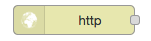
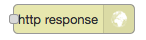

2.3. NodeRed opdrachten¶
In deze opdrachten maak je kennis met NodeRed. Je gebruikt NodeRed voor een eenvoudige IoT-toepassing: een dashboard van een IoT-knoop. Met dit dashboard kun je op een computer of op een smartphone de toestand van de IoT-knoop waarnemen, en de IoT-knoop besturen.
Met NodeRed kun je allerlei protocollen, diensten en besturingen aan elkaar koppelen, op een grafische manier. Hiermee kun je je IoT-keten samenstellen van sensoren en actuatoren tot Data Science- en Artificial Intelligence-diensten.
Wat heb je nodig?
- NodeRed-installatie
bijvoorbeeld: FRED - https://fred.sensetecnic.com (gratis versie)
- een IoT-knoop, bijvoorbeeld:
een gesimuleerde IoT-knoop
een IoT-knoop “elders”
een eigen hardware IoT-knoop, bijvoorbeeld een ESP8266-knoop met het programma
esp8266-node-0(zie https://infvo.github.io/iot-1/html/combinatie.html)
2.3.1. Voorbereiding¶
Lees als voorbereiding op de NodeRed-opdrachten eerst onderstaande tekst. Doe dit bij voorkeur met een geopende versie van NodeRed, zodat je de verschillende onderdelen direct kunt vinden en uitproberen.
Nodes en knopen: om verwarring te voorkomen gebruiken we in deze opdrachten het woord “knoop” voor een IoT-knoop, en “node” voor een NodeRed-node.
2.3.1.1. Nodes en flows¶

NodeRed http flow-voorbeeld¶
Een flow in NodeRed bestaat uit een netwerk van nodes en verbindingen. Het aansluitpunt (bolletje) aan de linkerkant van een node is de input. Een node zonder aansluiting links is een input-node, met een externe input, bijvoorbeeld een http-request. De outputs staan aan de rechterzijde van de node. Een node zonder aansluiting rechts is een output-node, met een externe output, bijvoorbeeld een http-response.
Een NodeRed-toepassing kan uit meerdere flows bestaan: elke flow heeft een eigen pagina (tab).
figuur |
naam |
soort node |
 |
http-input-node |
input |
 |
http-output-node |
output |
|
template-node |
in-out |

Hoe werkt een flow? Als een node een bericht (message) krijgt via de input, dan voert deze node daarop een bewerking uit, en genereert één of meer messages naar de output(s). Deze output is weer verbonden met de input van een andere node; of de node is een output-node, met een externe output.
Voor het bovenstaande flow-voorbeeld: (i) de http-input-node ontvangt een http-request als
de http-method gelijk is aan get en het URL-pad gelijk is aan /hello.
Deze http-input-node stuurt dan een message met dit request naar
(ii) de template-node hello.html.
Deze genereert de bijbehorende output: een html-document,
en stuurt een message met dit document naar
(iii) de http-output-node, die uit de message de bijbehorende response samenstelt.
Deze node stuurt de response naar de afzender van het http-request.
2.3.1.2. NodeRed UI¶

NodeRed user interface¶
In het NodeRed user interface vind je helemaal bovenin de Deploy-knop en het hamburgermenu (drie streepjes). Daaronder, van links naar rechts:
het node-palette. Uit dit palette selecteer je nodes die je wilt gebruiken. Er zijn onder andere input-nodes (met een bolletje rechts), output-nodes (met een bolletje links), en function-nodes (met links en rechts een bolletje). Er zijn nodes voor allerlei protocollen, bijvoorbeeld: HTTP, TCP, MQTT. Er zijn ook nodes voor communicatie met toepassingen als bijvoorbeeld Twitter.
- het flow-gedeelte. Dit bestaat uit verschillende flow-tabs.
Met “+” maak je een nieuwe flow-tab aan.
Door double-click op de flow-naam krijg je het configuratie-venster voor deze flow te zien. Hiermee kun je de flow hernoemen, tijdelijk uitschakelen (disable), of verwijderen (delete).
- de info/debug/dashboard-sidebar
de info-tab geeft informatie over de geselecteerde node in het flow-gedeelte.
de debug-tab geeft de debug-output van de huidige flow, of van alle flows.
via de dashboard-tab kun je de UI-instellingen van het dashboard veranderen.
- (alleen FRED) FRED-sidebar (links)
met het pijltje linksonder maak je deze (on)zichtbaar
De volgende oefeningen zijn bedoeld om vertrouwd te raken met het user interface. Deze oefeningen hebben geen effect op de flows zelf.
Oefenen met het NodeRed interface
- klik op het hamburgermenu, en zoek de instellingen voor:
het (on)zichtbaar maken van de sidebar (info/debug/dashboard)
het importeren van flows (vanuit het Clipboard)
het zichtbaar maken van de tab met configuratie-nodes
- zoek in het palette:
HTTP input-node
MQTT output-node
Twitter output-node
- voeg een nieuwe flow-tab toe (via “+”)
hernoem deze tot “Test-flow”
- (alleen voor FRED):
maak de FRED-sidebar (links) onzichtbaar en weer zichtbaar
2.3.1.3. Dashboard-nodes installeren¶
Installeren van dashboard-nodes
De dashboard-nodes zijn niet altijd beschikbaar in het node-palet links.
Als je FRED gebruikt, dan installeer je de dashboard-nodes als volgt:
selecteer in de FRED-zijbalk (helemaal links): Tools-> add or remove nodes
type in het zoekveld: dashboard
vink aan: Dashboard (a set of dashboard nodes for NodeRed).
Voor een normale NodeRed-installatie gebruik je de volgende stappen:
selecteer hamburger-menu (rechts) -> Manage Palette
selecteer de tab Install
type in het zoekveld: dashboard
klik op “install” voor node-red-dashboard (A set of dashboard nodes for Node-RED)
na deze installatie zijn de nodes in het palet links beschikbaar.
2.3.2. Eerste flow¶
Met deze eerste flow kun je zien of alles werkt:
Hiervoor gebruik je de volgende nodes:
figuur |
naam |
soort node |
|
inject-node |
input |
|
debug-node |
output |


{kind=link}
Opdracht 1.1
Voer de onderstaande opdrachten uit in een lege (flow)tab in NodeRed.
sleep een inject-node vanuit de lijst met nodes links naar het lege vlak in het midden
plaats op dezelfde manier een debug-node;
verbind de output (rechts) van de inject-node met de input (links) van de debug-node;
activeer deze flow (rechts boven: Deploy);
selecteer de debug-tab (rechts);
test deze flow, door op het knopje links op de input-node (“timestamp”) te klikken.
Als het goed is, krijg je in het debug-venster rechts nu de output van deze flow te zien. Elke keer als je op de input-node klikt, genereert deze een timestamp-event.
Opdracht 1.2
Voor onderstaande opdrachten uit; test de uitwerking (na “Deploy”) via de debug-tab.
- verander de configuratie van de inject-knoop: zorg ervoor dat deze elke 10 seconden een timestamp oplevert.
double-click op een knoop geeft het configuratie-venster;
bewaar de nieuwe configuratie via de “Done”-knop.
verander de configuratie van de inject-knoop: zorg ervoor dat deze een tekst levert als inhoud van het bericht (payload).
verbind meerdere inject-knopen met herhalende berichten met dezelfde debug-knoop.
2.3.3. Een IoT-dashboard¶
Als voorbeeld van een complete flow gebruiken we een dashboard voor een IoT-knoop. Dit dashboard maakt de sensorwaarden van de IoT-knoop zichtbaar; je kunt hiermee ook de LED van de IoT-knoop aansturen.

De dashboard-flow vind je via: /h2/dashboard-flow-1.json,
(Of via GitHub gist.)
Deze flow is in het JSON-formaat; later in het materiaal komt JSON ook aan bod.
Opdracht 2.1
- importeer de dashboard-flow:
selecteer de flow-tekst (in JSON-formaat), en kopieer deze naar het Clipboard (via “Copy” van het operating system).
in NodeRed: selecteer hamburgenmenu->Import->Clipboard
“Paste” de inhoud van het Clipboard in het input-venster.
“Import”
je krijgt nu een nieuwe flow met als naam (in de tab): My dashboard
- selecteer in deze flow de MQTT-input-node, en configureer deze (double-click):
selecteer bij “Server”:
infvopedia.nl(met port 1883)- als deze niet beschikbaar is: selecteer bij “Server”:
Add new mqtt-broker... klik op het potloodsymbool rechts daarvan
vul in bij “Server”:
infvopedia.nl(met port 1883)klik op “Add”
- als deze niet beschikbaar is: selecteer bij “Server”:
klik op het potloodsymbool rechts van “infvopedia.nl”; je krijgt nu de broker-instellingen te zien;
selecteer de tab “Security”, en vul de opgegeven gebruikersnaam en wachtwoord in
klik “Update” (voor de Server-instellingen)
klik “Done” (voor de instellingen van de MQTT-input-node)
- configureer de MQTT-output-node (selecteer en double-click):
selecteer bij “Server”:
infvopedia.nl:1883“Done”
- je krijgt nu het dashboard van de node
fe05. in de debug-tab worden de mqtt-berichten getoond
het dashboard krijg je via: dasboard-tab, hokje-met-pijltje rechts boven.
het dashboard komt dan in een apart browser-venster.
- je krijgt nu het dashboard van de node
- voor het aanpassen aan een eigen node:
configureer de MQTT-input-node, en verander het “topic”:
vervang
e0f1door de ID van je eigen node“Done”
idem, voor de MQTT-output-node.
Opdracht 2.2
Bekijk de debug-output in NodeRed voor deze flow. Tip: in de debug-tab selecteer je “current flow”, je krijgt dan alleen de debug-output van deze flow.
kun je in de berichten de ID van de IoT-knoop terugvinden? Wat is de naam van dit veld?
kun je in de berichten, in de “payload”, de sensorwaarde voor de temperatuur terugvinden?
hoe wordt die waarde aangepast tot de waarde die je in het dashboard ziet?
wat is het pad in het payload-object voor deze temperatuur-waarde (welke veldselectie en indicering is nodig)?
controleer dit door de programmatekst in de function-node “temperature” te bekijken.
beantwoord dezelfde vragen voor de luchtdruk (barometer).
(lastig) waarom worden de sensorwaarden als een gehele getal weergegeven?
(lastig) waarom worden de sensorwaarden zo “ingepakt”, waardoor je array-indicering e.d. nodig hebt? (Denk aan een situatie waarbij een IoT-knoop meerdere temperatuursensoren heeft.)
2.3.4. Automatiseren¶
Via NodeRed kun je allerlei protocollen en toepassingen koppelen. Je kunt ook allerlei zaken automatiseren, bijvoorbeeld een lamp inschakelen als je thuiskomt.
Een eenvoudige automatisering is het laten knipperen van LED-0 op de IoT-knoop.
Maak een NodeRed-flow waarmee je LED-0 van een (gesimuleerde) IoT-knoop laat knipperen. Begin met de eenvoudige flow van Opdracht 1, en breid deze later uit met een MQTT-output-node. Vergeet niet aan het eind van elke opdracht de flow te activeren (“Deploy”); controleer bij elke stap of het werkt.
Opdracht 3.1
In de eerste stap maak je een flow die elke 5 seconden een bericht genereert, afwisselend “aan” en “uit”. Je gebruikt hierbij twee inject-nodes; een inject-node genereert een bericht als je op de knop links klikt. (Zie de “eerste flow”.) Om het bericht zichtbaar te maken gebruik je een debug-node.
Maak de bovenstaande flow met 2 inject-nodes en 1 debug-node.
Configureer de bovenste inject-node:
Geef deze node de naam “On”;
Stel de payload is als “string”, met waarde: “Aan”;
zet “Repeat” van “none” naar “interval” (every 10 seconds);
Bewaar de configuratie (“Save”);
“Deploy”, en controleer de output in het debug-venster.
Configureer de onderste inject-node:
Geef deze de naam “Off”;
Stel de payload in als “string”, met waarde “Uit”;
Selecteer “inject once after” - met als waarde “5 seconds”;
Zet “Repeat” naar “interval” (every 10 seconds);
Bewaar de configuratie (“Save”);
“Deploy”, en controleer de output in het debug-venster.
Als het goed is zie je in het debug-venster elke 5 seconden een bericht verschijnen, afwisselend “aan” en “uit”.
Tips:
je kunt in het debug-venster aangeven dat je alleen de “current flow” wilt zien;
je kunt het debug-venster leeg maken via het vuilnisbakje (rechts boven).
Opdracht 3.2
De volgende stap is om elke deze waarden te koppelen aan de led van de IoT-knoop. Eerst maken we de waarden geschikt voor de LED. Vervolgens koppelen we deze aan de IoT-knoop, via MQTT.
Configureer de bovenste inject-node:
Stel de payload in als JSON, met als waarde:
{"0": {"dOut": 1}}. Tip: bij het invoeren van een JSON-waarde kun je de JSON-editor gebruiken, via de...rechts in het edit-venster. Je maakt dan minder fouten.Bewaar de configuratie (“Save”)
“Deploy”, en controleer de output in het debug-venster.
Configureer de onderste inject-node:
Stel de payload in als JSON, met als waarde:
{"0": {"dOut": 0}}.Bewaar de configuratie (“Save”)
“Deploy”, en controleer de output in het debug-venster.
Voeg een MQTT output-node toe, en configureer deze:
stel de MQTT broker (“server”) in als in bij het dashboard.
gebruik als Topic:
node/xxxx/actuators, waarbij je voorxxxxde ID van je IoT-knoop invult.Bewaar de configuratie (“Save”)
“Deploy”, en controleer de output in het debug-venster.
Als het goed is zie je nu de berichten niet alleen in het debug-venster verschijnen, maar knippert de LED van je IoT-knoop ook op dezelfde manier mee.
De codes voor het in- en uitschakelen van de LED behandelen we later uitgebreider. De eerste “0”` staat hier voor LED-0. Sommige IoT-knopen hebben ook een LED-1: probeer die op dezelfde manier te laten knipperen.
Deze manier van werken is typisch voor NodeRed: je bouwt een flow beetje voor beetje op, waarbij je in het begin veel gebruik maakt van inject- en debug-nodes. Je test hiermee elke stap. Deze nodes kun je laten zitten tijdens het gebruik: een debug-node kun je eenvoudig uitschakelen als je deze even niet nodig hebt.
Nog enkele suggesties:
je kunt meerdere MQTT-output-nodes toevoegen met dezelfde input, voor verschillende IoT-knopen: je kunt die LEDs tegelijk laten knipperen.
2.3.5. 4. Doorverbinden¶
In deze opdracht koppel je de drukknoppen van je knoop aan de LED van je knoop: je kunt dan de LED met deze knoppen aan- en uitzetten.
Volgende stappen:
door het topic van de MQTT-output-node te veranderen kun je ook de LED van een andere IoT-knoop schakelen.
je kunt meerdere MQTT-output-nodes gebruiken met dezelfde invoer: daarmee kun je de LEDs van meerdere IoT-knopen schakelen.
in plaats van de drukknoppen kun je ook het lichtniveau gebruiken om de LED te schakelen, zodat deze bijvoorbeeld aangaat als de IoT-knoop in het donker is.
2.3.6. NodeRed FAQ¶
hoe (de)activeer ik een hele flow?
Door double-click op de flow-tab krijg je het configuratievenster voor deze flow te zien. Je kunt de flow (de)activeren via Status (Enabled of niet). Het is soms handig om een flow te deactiveren, als deze andere flows in de weg zit. Of als dit een test-flow is die je zo nu en dan nodig hebt.
Je kunt de flow (tab) hier ook een andere naam geven, of helemaal verwijderen.
hoe maak ik de info/debug-sidebar (on)zichtbaar?
Via het hamburgermenu->View->Show sidebar.
hoe maak ik de FRED sidebar (on)zichtbaar?
Deze sidebar kun je (on)zichtbaar maken via het pijltje in de hoek linksonder.
hoe verwijder ik een hele flow?
Double-click op de flow tab: klik in het configuratie-venster op Delete, links boven. Door “Deploy” maak je de aangepaste flows actief.
hoe installeer ik extra nodes?
Er zijn veel soorten nodes beschikbaar voor allerlei protocollen en toepassingen. In de NodeRed library vind je veel voorbeelden.
Bij een standaard NodeRed installatie kun je extra nodes meestal installeren via hamburgermenu->Manage palette. Voor een uitgebreidere uitleg, zie https://nodered.org/docs/getting-started/adding-nodes.
In FRED kun je nodes installeren via de FRED sidebar, helemaal links. Deze sidebar kun je (on)zichtbaar maken via het pijltje in de hoek linksonder.
Voorbeeld: installeren van nodes voor TTN (THe Things Network):
selecteer Tools->Add or Remove Nodes
selecteer IoT
zet het vinkje bij Ttn (onderaan)
Na herstarten van de server verschijnen de TTN-nodes nu in het palette.
waar vind ik de verborgen nodes?
NodeRed gebruikt configuration nodes voor bijvoorbeeld de MQTT-server-instellingen, en voor de dashboard-instellingen. Deze configuration nodes kun je zichtbaar maken via hamburgermenu->Configuration nodes.
In de gratis versie van FRED heb je een beperking van maximaal 50 nodes. Daar tellen ook de verborgen nodes in mee.
de MQTT-nodes blijven hangen in de “connecting” toestand
Mogelijk ontbreken de security-gegevens (username/password van de MQTT broker). Double-click op de MQTT-node, en klik vervolgens op het potloodje naast de naam van de broker. In de configuratie van de broker selecteer je de tab “security”, en vult daar de username/password-combinatie van je broker in.